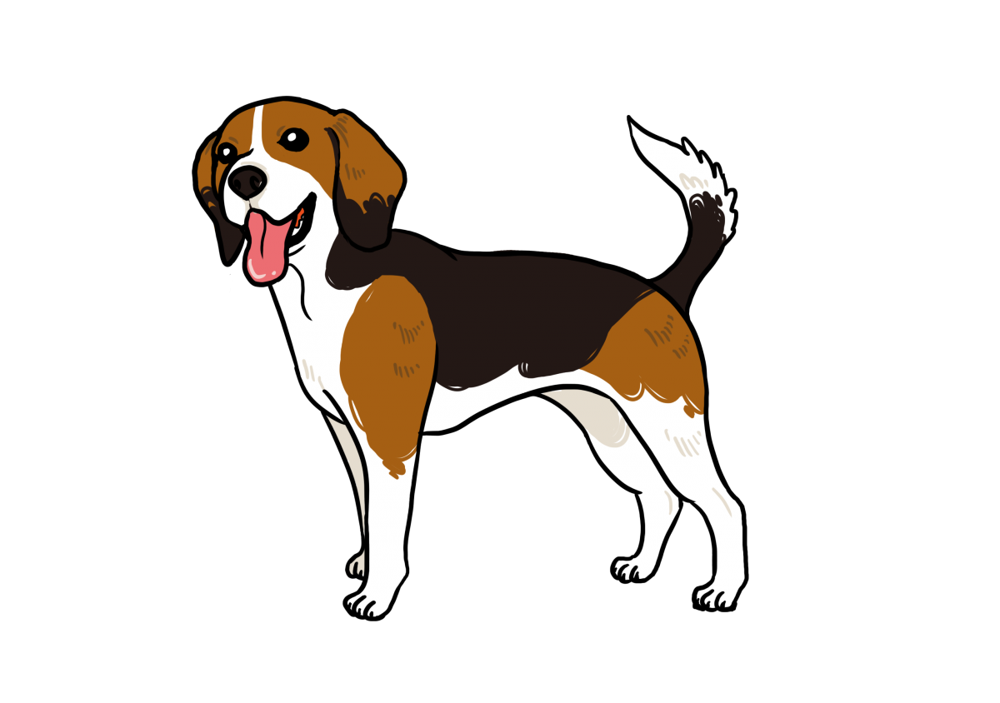
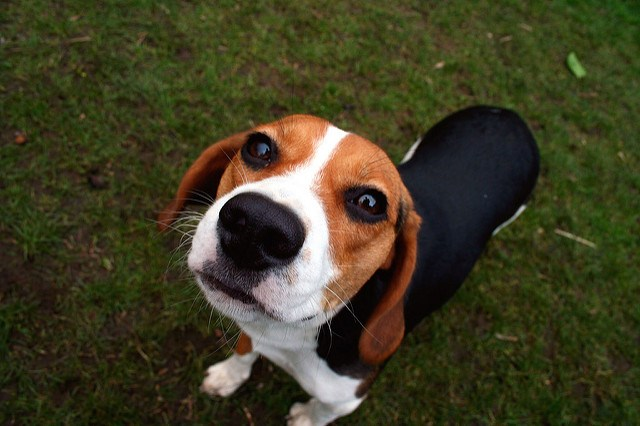
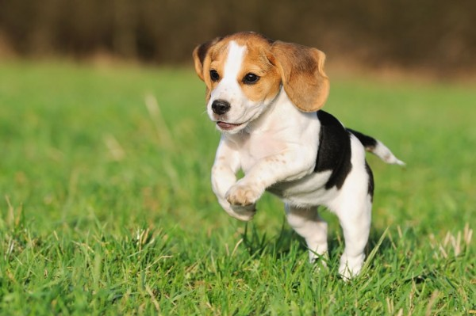
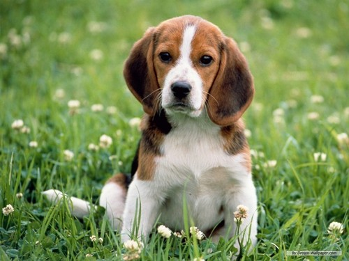

米格魯

外表
垂耳：可說是米格魯最大的特徵與賣點。米格魯的耳朵規定不能長過鼻頭，且耳朵下緣是圓且寬。以黃、黑、白三元色為主。>黃色：散佈於頭、耳朵、四肢的上半部、尾巴的下半部。黑色：主要在背部同時也是快速辨別是否為米格魯的最大象徵。白色：白色在最近常常被強調，因為以往以背部黑色做辨別的方法，隨著時代的改變已經不適用。體型：大約介於13寸到15寸之間，屬標準的中型犬。體格：腹部拍摸起來應該是強健有肉。尾巴：米格魯除了生病、飢餓或是心情不佳以外，尾巴幾乎都是往上翹，尾巴的弧度有如銳利的鐮刀。
性格
米格魯獵犬由於體形較小，易於馴服和抓捕，親人。外型可愛，性格開朗，動作惹人憐愛，日漸受到人們的歡迎而成為家庭犬。但由於米格魯獵犬成群時喜歡吠叫、吵鬧，所以家庭飼養最好養單只，以糾正其喜歡吠叫的壞毛病。
歷史
11世紀時，征服者威廉將塔爾特犬由法國帶至英國，成為米格魯的祖先之一。米格魯與英國皇室的淵源頗深，約在十六世紀到十七世紀的時期英國正值狩獵風潮。英國皇室養育了許多名犬以配合皇家出遊打獵，而短小精悍的米格魯被訓練成專門狩獵小型獵物，後來狩獵風潮逐漸退去，米格魯開始轉型成為家庭犬。
飼養注意事項
原為獵兔犬，好動破壞力強，在管教方面需多下功夫
容易因食慾旺盛造成肥胖，需注意體重控制
需注意罹患腫瘤，如：血管肉瘤、淋巴瘤


